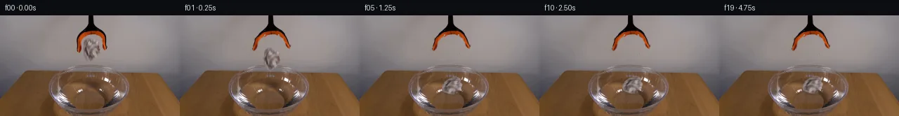

![首帧]()

Round 00
2026-11-05T15:23:14.873405+00:00像素候选变化代码 +342/−0inspection 更新
pixels 0dcbf4499f80f577 · code 1ef52e53fdb5a8cf
查看本轮 generate.py 真实 diff
--- previous/generate.py
+++ current/generate.py
@@ -0,0 +1,342 @@
+"""Deterministic local pixel animation of the supplied grabber/paper scene.
+
+No model, renderer, external assets, network, or generated-image viewing.
+Run: python generate.py
+"""
+from pathlib import Path
+import json
+import math
+
+import cv2
+import numpy as np
+from PIL import Image, ImageDraw
+from scipy.ndimage import binary_dilation, gaussian_filter
+
+import artifact_io
+
+ROOT = Path(__file__).resolve().parent
+W, H, N, FPS = 256, 144, 20, 4
+Y, X = np.mgrid[:H, :W].astype(np.float32)
+SOURCE = np.asarray(Image.open(ROOT / 'first_frame.png').convert('RGB'))
+assert SOURCE.shape == (H, W, 3)
+SRC = SOURCE.astype(np.float32)
+
+
+def polygon(points):
+ scale = 4
+ im = Image.new('L', (W * scale, H * scale))
+ ImageDraw.Draw(im).polygon([(round(x * scale), round(y * scale)) for x, y in points], fill=255)
+ return np.asarray(im.resize((W, H), Image.Resampling.LANCZOS), dtype=np.float32) / 255
+
+
+PAPER_CONTOUR = np.array([
+ (125.0, 31.6), (128.4, 31.5), (130.0, 34.0), (133.9, 32.2),
+ (136.6, 34.4), (137.8, 36.6), (139.9, 38.0), (140.3, 42.2),
+ (140.1, 44.4), (141.7, 46.2), (142.1, 49.3), (141.4, 52.8),
+ (139.7, 55.8), (137.6, 58.8), (134.8, 60.9), (132.3, 63.7),
+ (129.1, 65.6), (125.0, 64.0), (122.4, 61.9), (121.0, 59.1),
+ (118.9, 56.0), (118.7, 51.4), (118.3, 47.7), (119.1, 43.5),
+ (118.8, 39.0), (120.1, 35.6), (122.6, 33.5),
+], dtype=np.float32)
+paper_alpha = polygon(PAPER_CONTOUR.tolist())
+paper_alpha = gaussian_filter(paper_alpha, 0.22)
+paper_alpha[paper_alpha < 0.025] = 0
+
+left_scope = polygon([
+ (113.1, 25.5), (121.0, 25.5), (119.4, 29), (116.8, 33.0),
+ (115.4, 37.0), (115.8, 45), (115.4, 49), (113.5, 53.6),
+ (110.0, 53.5), (108.4, 49), (108.0, 39), (108.7, 32), (110.5, 28),
+])
+right_scope = polygon([
+ (141.2, 25.5), (148.0, 25.5), (151.1, 29.0), (152.4, 34),
+ (152.4, 41.0), (153.5, 45.9), (152.5, 49.4), (150.1, 51.3),
+ (147.0, 50.3), (146.0, 46.0), (145.4, 40), (144.0, 33), (142.0, 29),
+])
+# Color matting retains orange/black jaws but rejects the neutral wall.
+orange = np.clip((SRC[..., 0] - SRC[..., 1] - 13) / 49, 0, 1)
+black = np.clip((110 - SRC[..., 0]) / 62, 0, 1)
+jaw_signal = np.maximum(orange, black)
+left_alpha = left_scope * jaw_signal * (Y >= 27)
+right_alpha = right_scope * jaw_signal * (Y >= 27)
+
+# Reconstruct only revealed wall footprints. Row samples avoid both jaws and
+# paper; a narrow interpolation preserves the wall's vertical lighting falloff.
+wall = SRC.copy()
+for row in range(25, 69):
+ l = np.median(SRC[row, 100:107], axis=0)
+ r = np.median(SRC[row, 156:163], axis=0)
+ u = np.clip((np.arange(W, dtype=np.float32) - 103) / 56, 0, 1)
+ wall[row] = l[None, :] * (1-u[:, None]) + r[None, :] * u[:, None]
+erase_core = (paper_alpha > 0.03) | (left_alpha > 0.03) | (right_alpha > 0.03)
+erase = binary_dilation(erase_core, iterations=1).astype(np.float32)
+erase *= (Y >= 27) & (Y <= 68)
+clean = SRC * (1-erase[..., None]) + wall * erase[..., None]
+
+
+def warp_layer(alpha, matrix, rgb=SRC):
+ """Affine resampling of premultiplied texture, with transparent edges."""
+ a = cv2.warpAffine(alpha, matrix, (W, H), flags=cv2.INTER_LINEAR,
+ borderMode=cv2.BORDER_CONSTANT, borderValue=0)
+ p = cv2.warpAffine(rgb * alpha[..., None], matrix, (W, H),
+ flags=cv2.INTER_LINEAR, borderMode=cv2.BORDER_CONSTANT,
+ borderValue=0)
+ return p, a
+
+
+def over(frame, premultiplied, alpha):
+ return frame * (1-alpha[..., None]) + premultiplied
… diff truncated; 255 more lines …